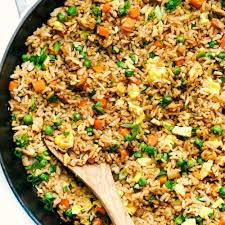

Fried Rice

How to make fried rice
This recipe will show you how to make a simple yet delicious version of fried rice, a dish everyone can enjoy.
List of ingredients
Recipe Instructions
- Begin by cracking and whisking your eggs
- Heat pan, add oil and scramble eggs
- Remove from pan and set aside
- Add more oil and begin cooking Rice
- Cook until browned then add eggs back to pan
- Saute everything together
- Plate and serve